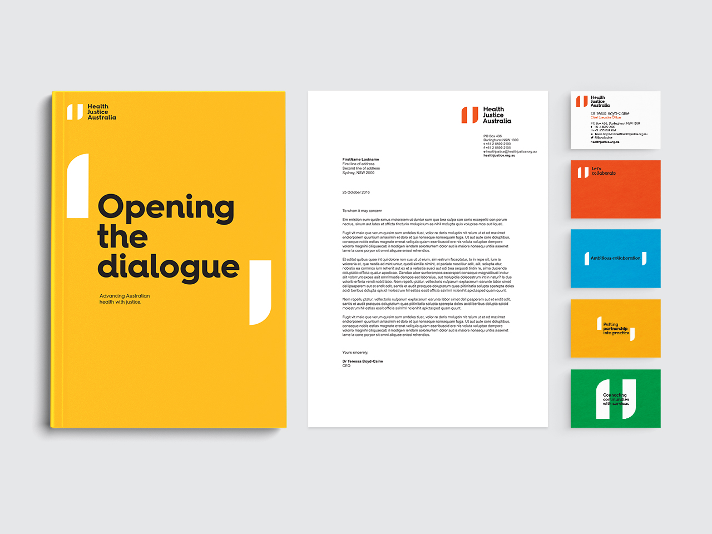
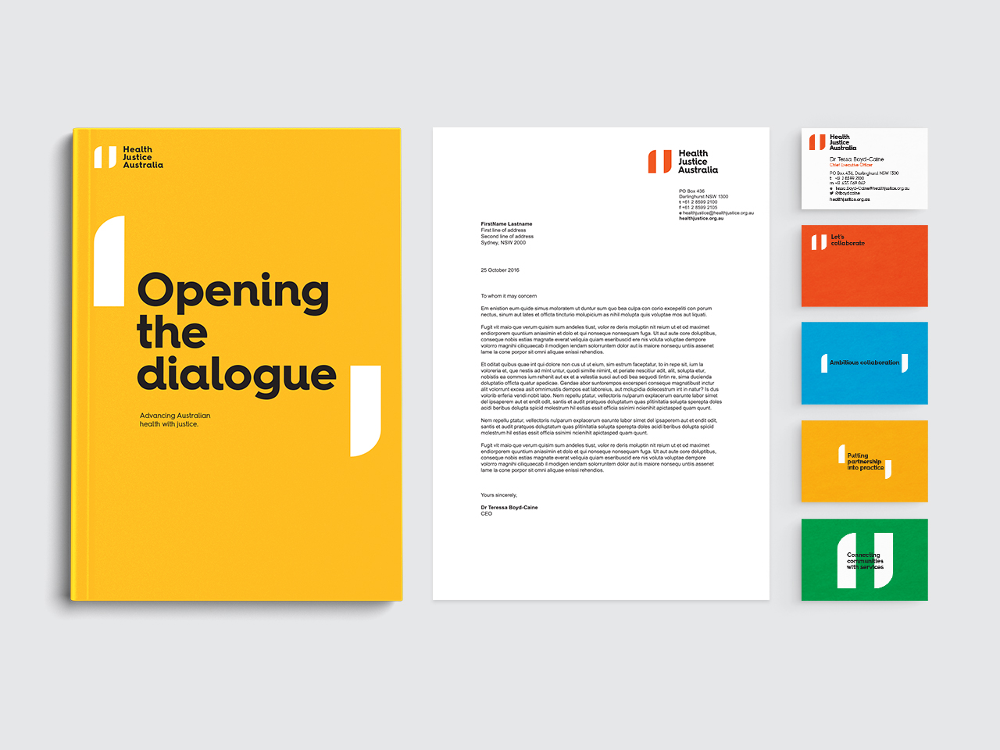

Clare Barrett
Designer and illustrator
Health Justice Australia
Disadvantaged Australians are far more likely to talk to a trusted GP about legal problems than a lawyer. HJA create partnerships between health professionals and lawyers to aid those dealing with difficult circumstances.
HJA is driving positive change in the community, and the brand idea of 'collaborative ambition' reflects that. The tone of the identity is 'mature start-up', reinforced through every piece of communication created.
Designed at Folk in collaboration with Creative Director Graham Barton and Design Director James Welch.
 
